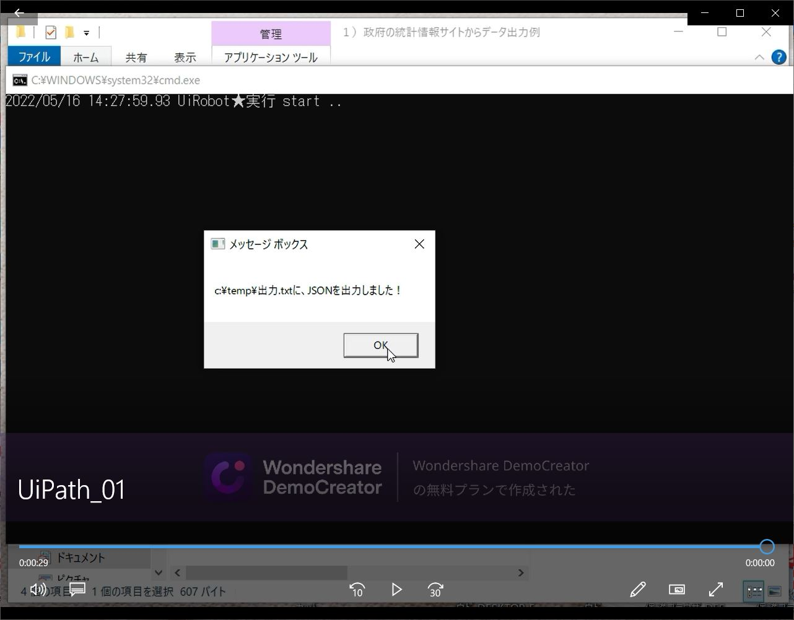

RobotWork01-UiPath_01
WEBサイトからWEBAPIでデータ出力する例
戻る
ReadMe
１）トップページhttps://www.e-stat.go.jp/を表示する。
２）ラベル名「統計データを活用する」の「地域」アイコンをクリックする。
３）ラベル名「都道府県・市区町村のすがた（社会・人口統計体系）」の
「都道府県データ」を選択した後に、「データ表示」アイコンをクリックする。
４）https://www.e-stat.go.jp/regional-statistics/ssdsview/prefecturesに遷移する。
５）地域候補４８地域の全てを選択した後に、確定ボタンをクリックする。
６）項目候補５６８項目の中から下記の項目を選択した後に、確定ボタンをクリックすると自動的に画面遷移する。
総人口（人）
総人口（男）（人）
総人口（女）（人）
日本人人口（人）
日本人人口（男）（人）
日本人人口（女）（人）
７）https://www.e-stat.go.jp/regional-statistics/ssdsview/prefecturesに遷移する。
WEB画面上には、統計表表示タブ、グラフ表示タブ、ダウンロードボタン、APIボタンが表示される。
８）APIボタンをクリックするとURLが取得出来る。
９）トップページでログインした後に、マイページ表示画面にて、アプリケーションIDを取得する。
https://www.e-stat.go.jp/mypage/view/api
＜アプリケーションIDの取得＞
手順：下記の項目を入力した後に「発行」ボタンをクリックする。
名称：UiPathTEST
URL：https://www.e-stat.go.jp/
概要：RPAでの使用
appId：XXXXXXXXXXXXXXXXXXXXXXXXXXXXXXXXXXXXXXXXXX
10）appId=に取得したアプリケーションIDを記入して、上記８）で取得したURLを書き換える。
●UiPathをバッチで実行
